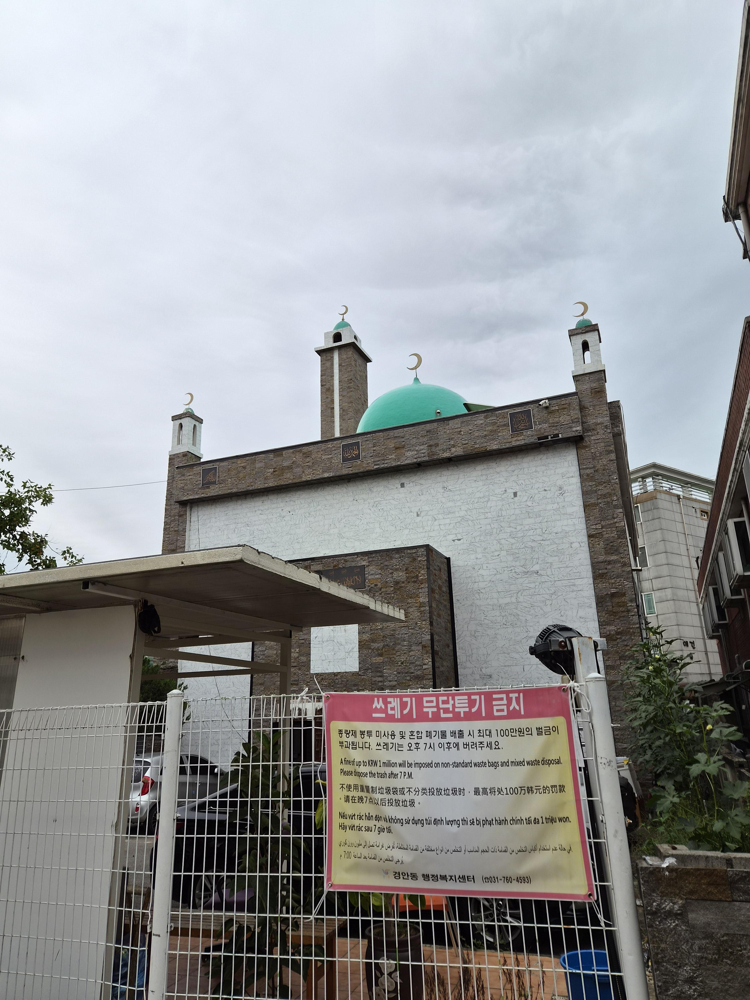
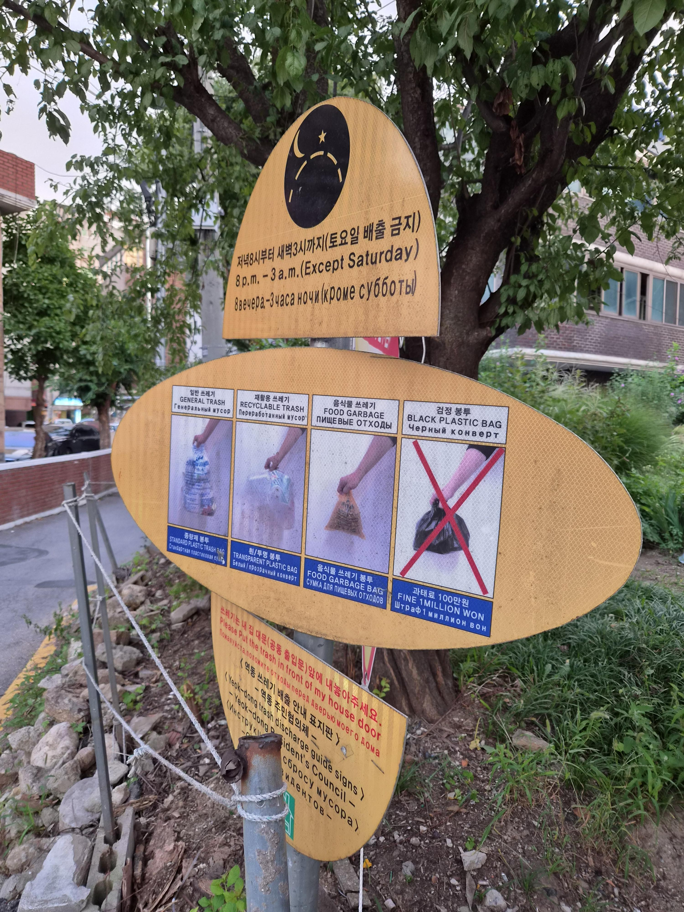
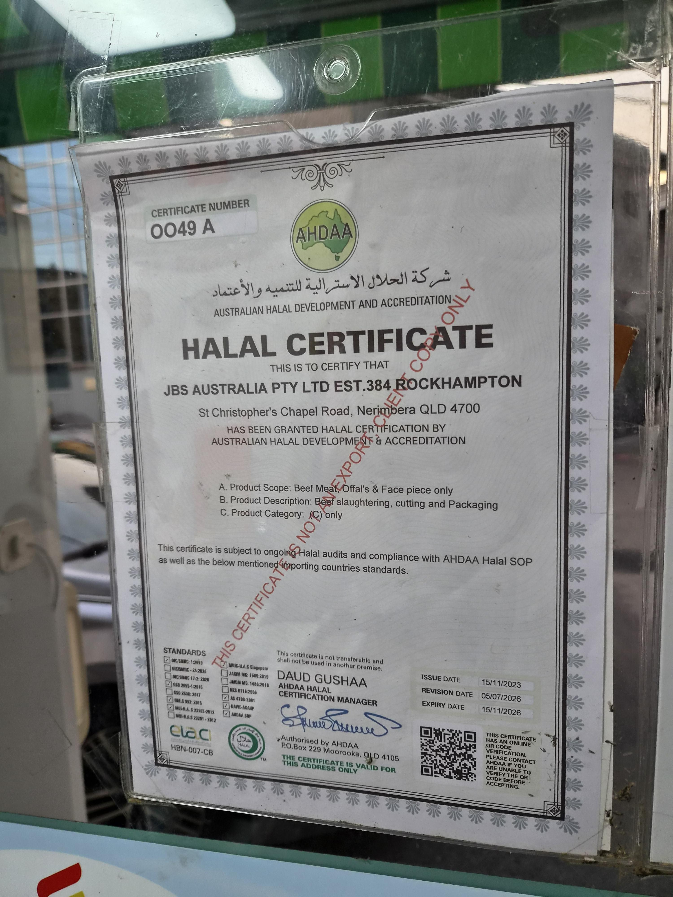
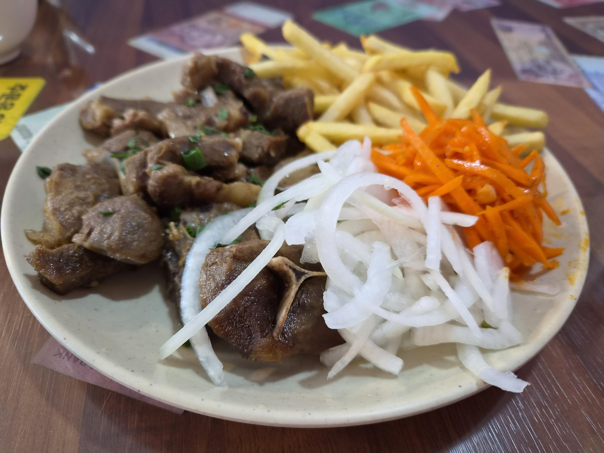
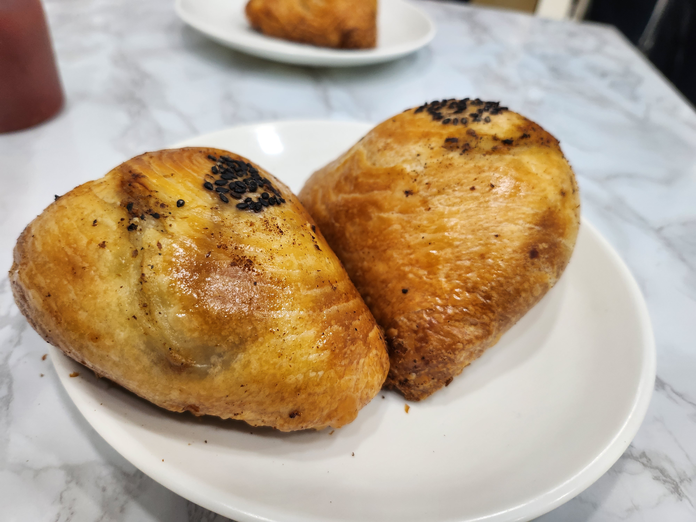
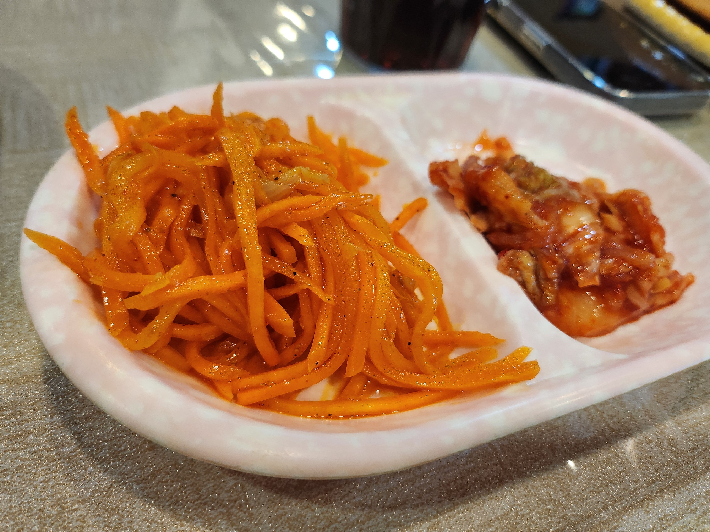
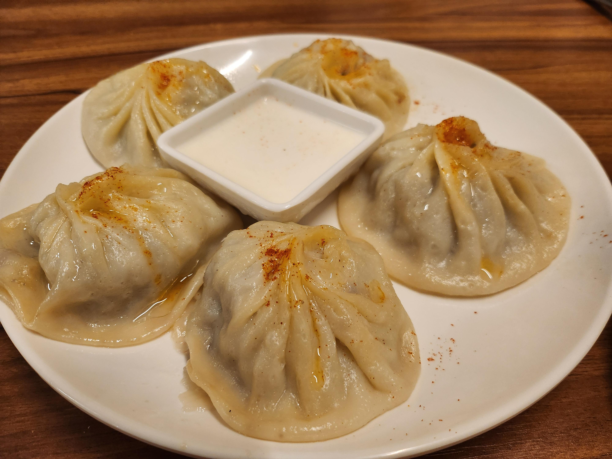
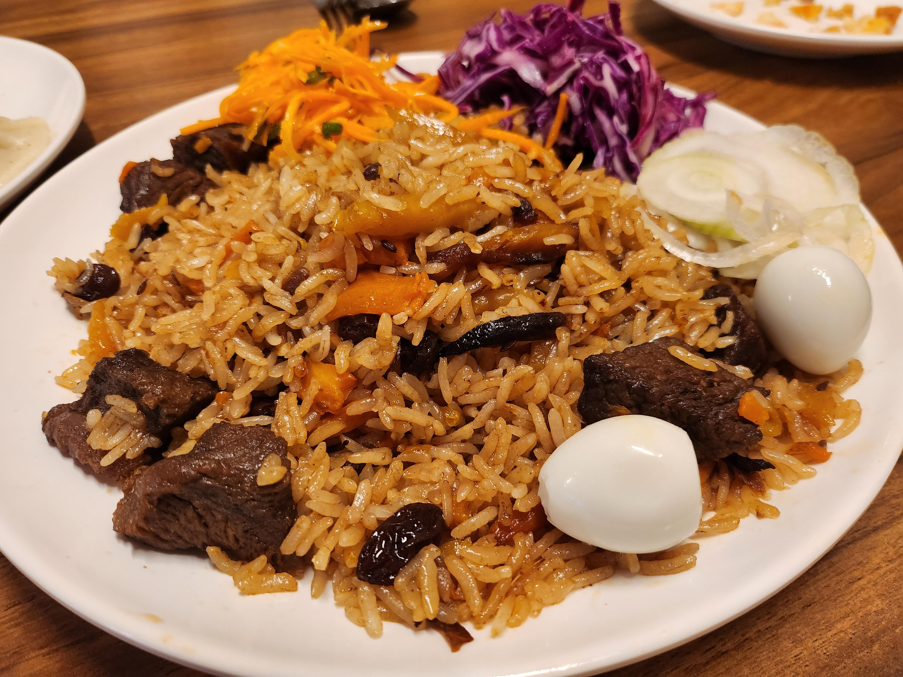
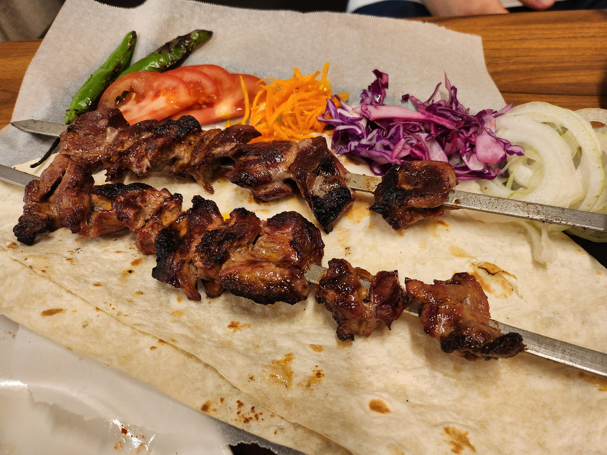
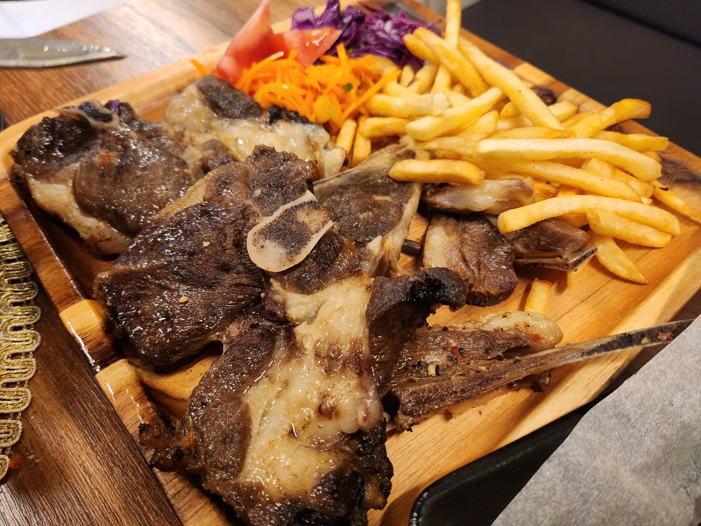
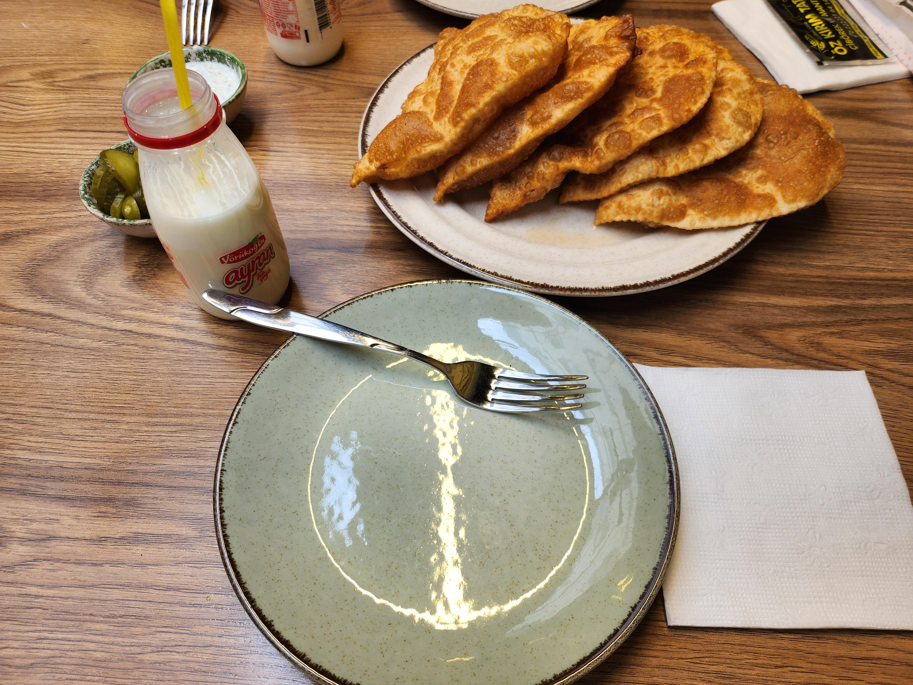
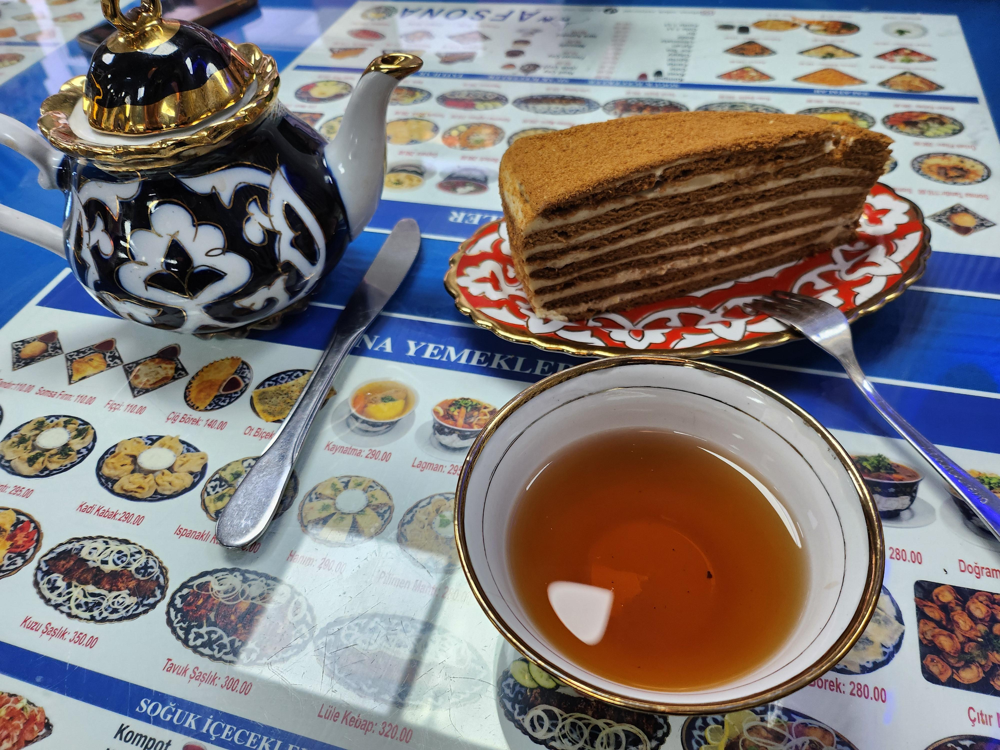
우선 이 글 작성하는 개붕이는 어릴 때 러시아에서 꽤 오래 살다 왔고, 경기광주나 광주광역시 등지에서 중도입학 이주민 자녀들을 대상으로 한국어 교육봉사도 꾸준히 해왔음.
그러다보니 외국인이나 이주민 문제를 볼 때 일반적인 우리나라 사람들보다 약간 변호하는 쪽으로 기울어 있을 것임.. 이 점은 미리 밝히고 시작함.
종종 커뮤들 보면 한국에서 할랄 음식 구하기 힘들다고 징징대는 무슬림들 이야기가 올라옴.
물론 한국은 이슬람권 국가가 아니니까 처음 들어온 사람 입장에서는 불편할 수 있음. 어느 고기에 돼지고기가 들어가는지, 조미료에 술이 들어가는지, 할랄 고기를 어디서 사야 하는지 모르면 처음에는 꽤 막막할 수도 있음.
근데 이걸 가지고 "한국에는 무슬림이 먹을 게 없다", "한국 사회가 무슬림을 배려하지 않는다" 까지 가는 건 솔직히 좀 억지주장이고 본인들이 게으른 것이라고 생각함.
몇몇 개붕이들은 이미 알고 있겠지만, 안산, 인천, 김해, 광주 같은 이주민 정착지역 가보면 이미 우즈벡인들을 비롯한 무슬림들이 알아서 잘 먹고 살고 있음. 중앙아시아 식당, 인도/파키스탄/방글라데시 식당, 인도네시아 식당, 할랄 정육점, 외국 식료품점 같은 데도 생각보다 많음.
오늘도 야비군 끝나고 경기광주에 있는 우즈벡 식당 들어가서 밥 먹었는데, 그냥 평범하게 가족 단위로 와서 먹고, 개중엔 우리말로 애들한테 잔소리하는 우즈벡 부모들도 있었음.
한국에 무슬림 생활권이 아예 없는 게 아니고, 존나 오래된 게 저기 위에있는 경기광주 성원 열린 게 무려 1981년도임...
그리고 이번 글에서 말하고 싶은 가장 중요한 건, 무슬림이라고 다 한 덩어리가 아니라는 점을 말하고 싶음.
우즈벡인, 파키스탄인, 인도네시아인, 아랍인을 그냥 '무슬림' 하나로 묶어버리면 현실하고 굉장히 동떨어진다고 봄.
언어도 다르고 음식도 다르고 민족도 다르고, 종파나 출신지역에 따라서 서로 사이 안 좋은 경우도 많음. 미국인이랑 과테말라인을 둘 다 기독교인이니까 같은 기독교라고 싸잡아 취급하는 것과 비슷함.
한국에 이미 무슬림 커뮤니티와 식당이 있는데도 본인이 그쪽 사람들이랑 어울리기 싫다거나, 자기 출신지역 음식이 아니라고 안 찾아가면서 "한국에는 먹을 게 없다" 고 하는 경우도 있음.
왜냐하면 그 이유 자체가 "귀하게 자란 내가 어찌 저 불신자들(대개 나이롱 무슬림들)과 어울려야 하는거죠?" 이기 때문이라 우리 사회의 문제라기보다는 본인이 선택한 문제에 더 가까움.
실제로 이야기해보면 기존 무슬림 커뮤니티를 본인보다 세속적이라거나, 출신 지역이 다르다는 이유로 꺼리는 경우도 있었음. 같은 무슬림이라고 해서 무조건 서로 어울리고 싶어 하는 것도 아니라는 거임.
그런 연유로 할랄을 지키는 정도도 사람마다 천차만별임.
어떤 사람은 '돼지고기만 아니면 됨' 수준이고, 어떤 사람은 술 들어간 음식까지 피하고, 어떤 사람은 반드시 할랄 인증 고기만 먹음. 더 엄격한 경우는 같은 칼이나 도마를 돼지고기와 같이 썼는지까지 따지는 경우도 있고(솔직히 호들갑스럽게 느껴지는 경우는 이 경우인데, 모수가 크지 읺음 어차피 그런거 따졌을거면 한국이 아니라 중동이나 유럽으로 가거든)
즉 할랄이라는 것도 ON/OFF가 아니라 사실상 스펙트럼에 가까운거고, 종교 규범이라는 것도 실제 생활에서는 지역과 개인에 따라 적용 정도가 다름.
우리도 뭐 같은 개신교라고 해도 장로 감리 침례 초교파 등등 교회다니는 스타일이나 예배스타일, 신앙의 척도가 다 다른것과 비슷한거지.
개인적으로 한국에서 할랄 음식 선택지가 늘어나는 것 자체는 아무 문제 없다고 생각함.
먹으려는 사람이 많으면 식당 생기고, 기업이 할랄 인증 제품 만들어서 팔면 되는 거임. 그냥 시장임.
학교나 병원, 군대처럼 사람이 자기 식사를 자유롭게 선택하기 힘든 곳이라면 가능한 범위에서 대체식 정도 제공해주는 것도 나쁘지 않다고 봄.
근데 본인이 선택한 종교 규율을 사회 전체가 완벽하게 맞춰줘야 한다는 요구는 전혀 다른 문제임.
특히 이미 주변에 이용 가능한 식당이나 가게가 있는데 본인이 찾아볼 생각도 안 하고, 기존 이주민 커뮤니티와도 엮이기 싫다고 하면서 그 불편을 죄다 '한국인의 배타성' 로 돌리는 건 솔직히 설득력도 없고 많이 괘씸하다고 느끼거든요...
한국 사회가 외국인에게 조금씩 편리해지는 것과, 외국인이 한국 사회에 어느 정도 적응하는 건 동시에 가능한 일임.
둘 중 하나만 해야 하는 게 아님.
그리고 이것도 꼭 말하고 싶은 게 있음.
《인터넷에서 할랄 가지고 징징거리는 몇 명이 재한 무슬림 전체를 대표하지 않음》
대부분은 그냥 자기 먹을 거 알아서 찾아다니면서 일하고 학교 다니고 애 키우고 살고 있음.
무슬림도 그냥 먹고자고싸고야한생각하고딸치고씹덕보고약후짤보고딸치는 사람들임.
엄격한 사람도 있고 대충 사는 사람도 있고, 부지런한 사람도 있고 게으른 사람도 있고, 남 탓 많이 하는 사람도 있고 조용히 자기 생활하는 사람도 있음.
그러니까 일부 사례 보고 '역시 개슬람 바퀴벌레들은 싸그리 밟아죽여야한다' 같은 헤이트스피치를 볼때마다, 한국 사회에 적응하기 위해 노력하는 사람들과, 그 사람들의 정착지원을 도와주는 사람들의 노고를 무시하는 행위라고 생각함...
반대로 개인이 선택으로 인해 겪는 모든 불편을 '한국 사회가 소수자를 탄압한다' 는 식으로 궤변 펼치는 놈들은 뚜드려 맞아야하고...
글이 좀 두서없이 적혔는데,
그냥 먹을 수 있는 사람은 먹고, 못 먹는 사람은 자기 기준에 맞는 걸 찾아 먹으면 됨.
한국도 수요가 늘면 그만큼 선택지가 자연스럽게 늘어날 거고.
생각보다 이미 그렇게 살고 있는 사람들이 많음.
진짜 개소리 하는 이슬람 새끼들은 입국거부 해야함. 평범하게 융화되서 살던 이슬람들도 그런 씹새끼들한테 물들어서 지랄남.